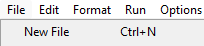
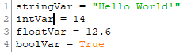
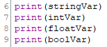
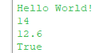

To get started with python you will need a IDE. I am using IDLE so I would reccomend it for anyone else. In IDLE create a new file 
Once created you can start typing your code!.
A variable is something that stores data that can be changed at almost anytime. These will be used ALOT during your programs.
You can create a variable by simply typing "Var = value" thats it. there are 4 value types Strings, Integers, Floats, Bools.
Strings are any type of texts so it could be "Hello World!" or "1424a" or "hello 1.232" or it could even look like a int like "10"
Integers are any type of whole number so 10 or 50 or 6 or 34 but they cant have any decimals so it cant be 10.4 or 5.6
Floats are any number with a decimal so 10.4 or 6.9 or 7.46 or 1.0 or 43.3648572 but they need the decimal point even if its just 0
Bools are alot simpler because they only have 2 values true and false these are good for alot of things.
You can manipulate shell using all different ways like print() and input vars. You can make a string input var by doing "var = input("what u want")"
Shell is the easyest way to get infomation to the user but its not the only way. You can use libarys and different thing to.
 This is 1 of many ways to input to shell. This way is using the print function.
 This is what the output will be from that script.
Turtle is a python libary that is very helpful for many different things. To use turtle you need to import it by putting "import Turtle" at the top.
Turtle has a few different commands but we will only look into 3 as of now. Some simple turtle commands would be things like forward, left, and right.
turtle.Forward(x) is a command that will move you turtle forward x amount.
turtle.Left(x) is a command that will turn your turtle left x degrees
turtle.Right(x) is a command that will turn your turtle right x degrees